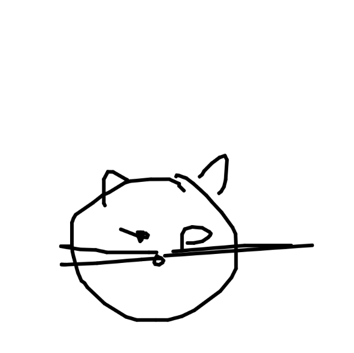
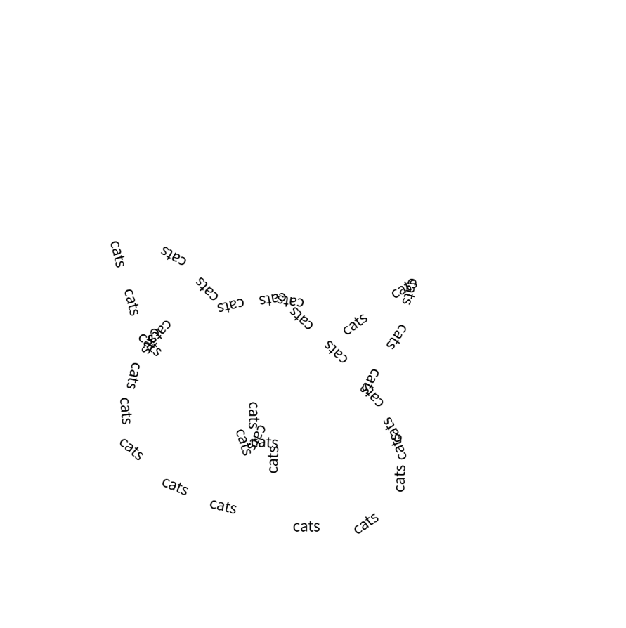

My precedent: TypeContour
1.I'm particularly interested in this idea that a machine can recognize voice text and then use the text to trace or fill shapes based on it.

2.At this step, I tested SketchRNN following Daniel Shiffman’s tutorial. My next step is to integrate it with voice input, using speech to trigger the drawing.
let sketchRNN;
let currentStroke;
let x,y;
let nextPen = 'down';
function preload(){
sketchRNN = ml5.sketchRNN('cat');
}
function setup() {
createCanvas(400, 400);
console.log('model loaded');
x = width/2;
y = height/2;
background(255);
sketchRNN.generate(gotStrokePath);
}
function gotStrokePath(error, strokePath){
console.log(strokePath);
currentStroke = strokePath;
}
function draw() {
if(currentStroke){
stroke(0);
strokeWeight(4);
if (nextPen == 'end'){
noLoop();
return;
}
if (nextPen == 'down'){
line(x, y, x + currentStroke.dx, y + currentStroke.dy);
}
x += currentStroke.dx;
y += currentStroke.dy;
nextPen = currentStroke.pen;
currentStroke = null;
sketchRNN.generate(gotStrokePath);
}
}

3.My current idea is to combine speech recognition in p5.js with SketchRNN: spoken words are converted into text, and then this text is used to replace the path lines in Daniel Shiffman’s SketchRNN tutorials.
let sketchRNN;
let currentStroke;
let x,y;
let nextPen = 'down';
let speechRec;
let wordList = [];
let wordIndex = 0;
let distCounter = 0;
let wordSpace = 2;
let isDrawing = false;
function preload(){
sketchRNN = ml5.sketchRNN('cat');
}
function setup() {
createCanvas(600, 600);
background(255);
console.log('model loaded');
x = width/2;
y = height/2;
speechRec = new p5.SpeechRec('en-US', gotSpeech);
let continuous = false;
let interimResults = false;
speechRec.start(continuous, interimResults);
// sketchRNN.generate(gotStrokePath);
textFont('sans-serif');
textSize(14);
textAlign(CENTER, CENTER);
fill(0);
noStroke();
text("Say something to start", width/2, height/2);
}
function gotSpeech() {
if (speechRec.resultValue) {
let rawText = speechRec.resultString;
console.log(rawText);
wordList = rawText.split(' ');
wordIndex = 0;
background(255);
x = width/2;
y = height/2;
sketchRNN.reset();
isDrawing = true;
sketchRNN.generate(gotStrokePath);
}
}
function gotStrokePath(error, strokePath){
console.log(strokePath);
currentStroke = strokePath;
}
function draw() {
if(isDrawing && currentStroke){
if (nextPen == 'end'){
isDrawing = false;
currentStroke = null;
speechRec.start(false, false);
return;
}
if (nextPen == 'down'){
let stepDist = dist(0, 0, currentStroke.dx, currentStroke.dy);
distCounter += stepDist;
if (wordList.length > 0) {
let currentWord = wordList[wordIndex % wordList.length];
let wordWidth = textWidth(currentWord);
if (distCounter > wordWidth + wordSpace) {
push();
translate(x, y);
let angle = atan2(currentStroke.dy, currentStroke.dx);
rotate(angle);
text(currentWord, 0, 0);
pop();
wordIndex++;
distCounter = 0;
}
}
}
x += currentStroke.dx;
y += currentStroke.dy;
nextPen = currentStroke.pen;
currentStroke = null;
sketchRNN.generate(gotStrokePath);
}
}